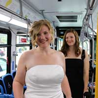
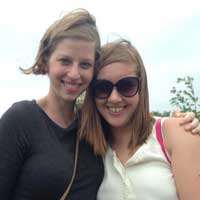
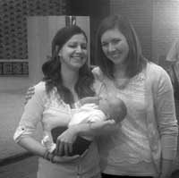
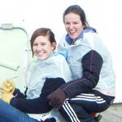
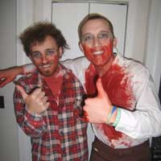
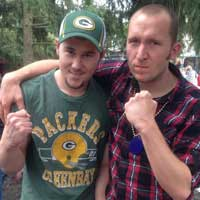
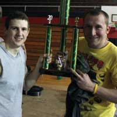
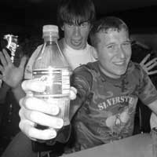
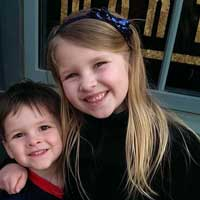
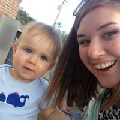

The reception will be held at the Oxford Community Arts Center, which is a historical landmark which dates back to 1849.
The Wedding Party

Allison NormanMatron of HonorAllison is the greatest sister Stephanie could have ever hoped for. From the days of watching Dirty Dancing on VHS and reading Berenstein Bear books, Allison has always guided Stephanie and been a supportive and encouraging big sister. Now the two enjoy swapping recipes and makeup tips.

Deedee TisdaleBridesmaidStephanie met Deedee through Kappa Phi at Ohio University. Since Deedee was a wise upperclassman, she helped Stephanie through college life, like how to register for classes, telling her which professors were best, and applying for their first jobs. The two have traveled to Guatemala and New Orleans together and swap stories and ideas from the classroom. Stephanie has recently started sewing and loves to see the projects Deedee creates!

Courtney ClementsBridesmaidCourtney and Stephanie worked together at Creekside Middle School. Courtney was looking for a running buddy, and Stephanie volunteered. Although the running together didn't last, their friendship did. The two regularly eat nachos, wander around Target, and eat Chipotle.

Katie FordBridesmaidKatie and Stephanie became close through Kappa Phi. Katie hung out with Chris and Stephanie at the Circleville Pumpkin Festival and even made a mix CD for the trip. In addition to her master mix CD, Katie's bubbly personality always makes her friends feel loved and special. Katie and Stephanie have long distance dates to watch Project Runway.

Shane HoltzmanBest ManShane and Chris met during their freshman year at Ohio University. They clicked over similar interests. Since then they have always had a good time hanging out with each other (including dressing up as zombies for Halloween, as shown here) and have always stayed in touch. Shane is the perfect definition of a best man because he's always been there through the good and bad. The two know pretty much everything about each other.

Brent SmithGroomsmanChris met Brent when he was born because they're brothers (duh). From playing GI Joes at Grandma's and playing video games, to hanging out at home as adults, they've always been very close and Brent has always been there. Chris couldn't imagine having a better brother.

Corey BatesGroomsmanChris met Corey at the fireman's festival in high school. At the time Chris and Justin were good friends and were trying to start a band. The pair met Corey because Justin said he was a good drummer. Being in a band was just the beginning of their friendship together. Not only is he the best drummer Chris has ever played with, but he's become a great friend. Corey is just a really good guy to be around in general, and together they share a strong passion for music.

Justin GravesGroomsmanChris met Justin at the fair in high school and they clicked immediately. Justin is funny and entertaining to be around. He's a gifted guitar player and inspired Chris to start a band because they had so much fun singing and jamming together.
Darcy MoffettFlower GirlThe Moffetts have been longtime family friends of Stephanie's. When Stephanie stayed with them during her student teaching, Darcy and she would make pancakes and forts during the snow days.

Lily RhoadesFlower GirlLily is one of the most fun little kids in Chris' family to be around. Her father, David, is Chris's cousin and growing up, David was one of Chris' best friends.

Tobias ClementsRing BearerTobais is Stephanie's godson, and Stephanie was lucky enough to be present for his delivery. We're hoping he masters walking by the time the wedding comes around! Tobias's mother is Courtney, a bridesmaid.
Pastor Ross StackhousePastor Ross Stackhouse is the worship leader at St. Marks United Methodist Church in Carmel, Indiana where Stephanie attended before moving to Oxford.